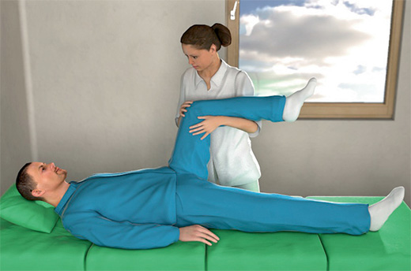

Rehabilitation
|

| Berechnungsbeispiel für Verletztengeld | |
| |
| Verletztengeld | kalendertäglich |
| 80 % des Regelentgeltes (hier EURO 1.200,– ·/. 30 Tage x 80 %) | EURO 32,– |
| Ist der Nettoverdienst geringer, wird dieses berücksichtigt. | |
| |
Verletztengeld
Übergangsgeld
Übergangsleistung bei Berufskrankheiten
07/2019